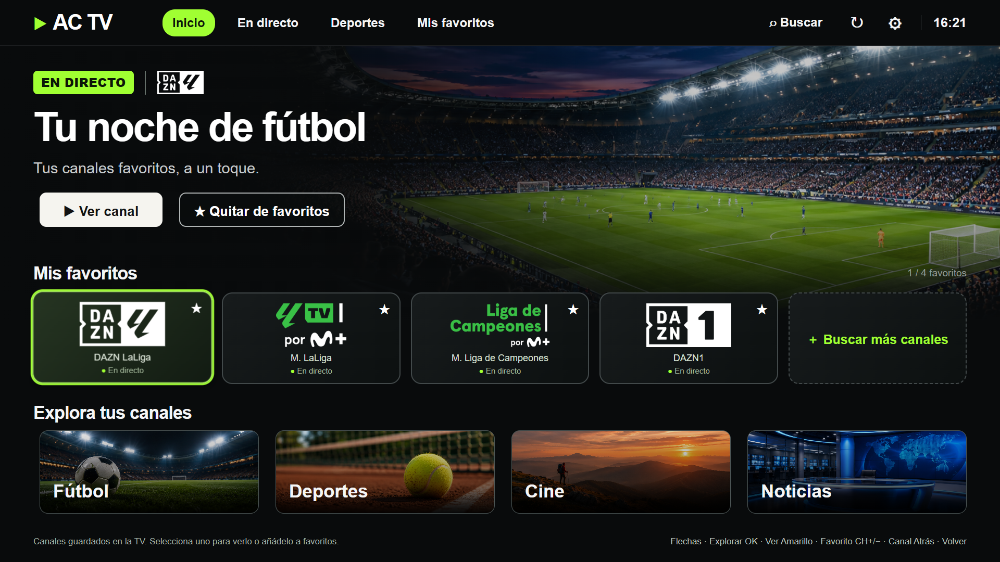

<!doctype html>
<html lang="es">
<meta charset="utf-8">
<title>AC TV para Samsung</title>
<style>
  * { box-sizing: border-box; }
  html { background: #0b100d; }
  body { width: 1600px; height: 900px; margin: 0; padding: 68px 76px 54px; color: #f1f6ed;
    background: radial-gradient(ellipse at 79% 36%, #253a1c, transparent 58%), #0b100d;
    display: grid; grid-template-rows: 80px 1fr auto; font: 24px Arial, sans-serif; }
  header, footer { display: flex; align-items: center; justify-content: space-between; }
  header img { display: block; width: 218px; }
  .platform { padding: 12px 20px; border-radius: 32px; border: 1px solid #4c6140;
    color: #d5e2cb; font-size: 17px; letter-spacing: 1.8px; }
  main { display: grid; grid-template-columns: 490px minmax(0, 1fr); gap: 50px; align-items: center; }
  .eyebrow { color: #a0ff32; font-size: 17px; font-weight: bold; letter-spacing: 2.5px; }
  h1 { margin: 14px 0 24px; font-size: 79px; line-height: 1.02; letter-spacing: -4px; }
  h1 span { color: #a0ff32; }
  p { color: #c8d4c1; font-size: 25px; line-height: 1.4; margin: 0; }
  ul { list-style: none; padding: 0; margin: 30px 0 0; color: #e0ead9; font-size: 20px; line-height: 2; }
  li::before { content: '✓'; margin-right: 12px; color: #a0ff32; }
  figure { margin: 0; padding: 9px; background: #161f14; border: 1px solid #56654c;
    border-radius: 20px; box-shadow: 0 28px 62px #0008; }
  figure img { display: block; width: 100%; aspect-ratio: 16 / 9; border-radius: 12px; }
  footer { padding-top: 20px; border-top: 1px solid #33412f; font-size: 17px; color: #a9b8a0; }
</style>
<header>
  
  <span class="platform">SAMSUNG TIZEN · CÓDIGO ABIERTO</span>
</header>
<main>
  <section>
    <span class="eyebrow">REPRODUCTOR PARA TV</span>
    <h1>Tus enlaces.<br><span>En tu Samsung.</span></h1>
    <p>Añade tus canales y elige qué ver con el mando.</p>
    <ul>
      <li>Importación M3U de Ace Stream</li>
      <li>Búsqueda, favoritos y recientes</li>
      <li>Reproducción desde la tele</li>
    </ul>
  </section>
  <figure></figure>
</main>
<footer><span>Captura con datos de demostración</span><span>Instalación en modo desarrollador</span></footer>
</html>
